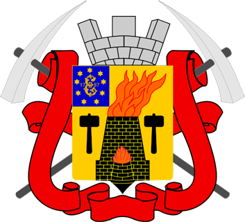
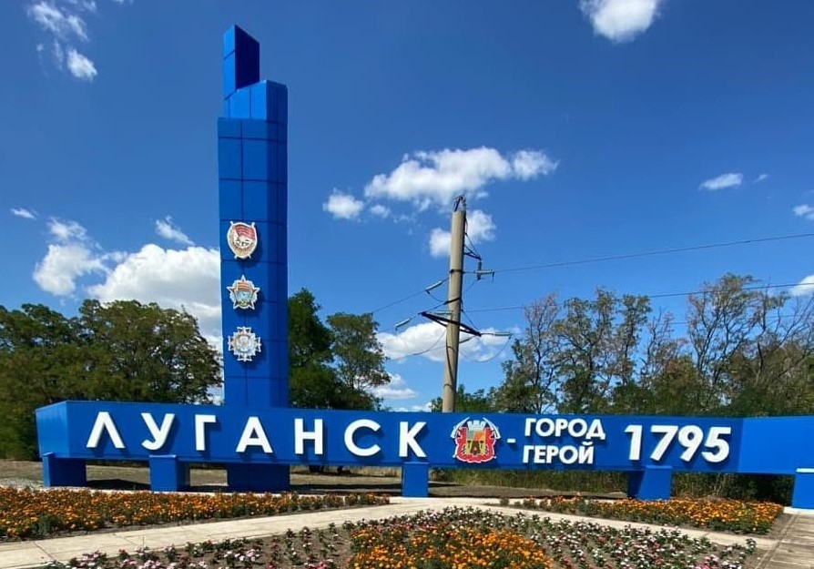

Луганск

Есть в мире города более древние, богатые и знаменитые, но город Луганск по-своему уникален и неповторим. Его неповторимость заключена в десятках поколений луганчан, живших на нашей земле, строивших город над Луганью. Наш город - творение рук наших далёких и близких предков.
Датой основания города принято считать ноябрь 1795 года. В этом году императрица Екатерина II подписала "Указ о строительстве на реке Лугань, у села Каменный Брод
Луганского чугунолитейного завода".
В 1797 году образовавшийся неподалёку от завода посёлок получил название Луганский.
Прежние названия города
- до 1935 — Луганск;
- 1935–1958 — Ворошиловград;
- 1958–1970 — Луганск;
- 1970–1990 — Ворошиловград;
- с 1990 — Луганск.

Луганск — город на юго-западе России, расположен на реке Луга́нь. Столица Луганской Народной Республики. Является городом республиканского значения и центром
городского округа.
Договор между Луганской Народной Республикой и Российской Федерацией от 30.09.2022 года определяет территорию ЛНР,
включая город Луганск, как новый субъект в составе Российской Федерации.
В XX веке Луганск (и Ворошиловград) был крупным индустриальным узлом Донбасса: развивались машиностроение, металлургия, угольная промышленность.
Город сильно пострадал в годы Великой Отечественной войны, был оккупирован и освобождён в 1943 году. После распада СССР Луганск оставался важным промышленным и
культурным центром. В 2014 году в городе и области произошли массовые протесты,
в результате которых была провозглашена ЛНР. В 2022 году ЛНР вошла в состав РФ.
Экономика и промышленность
Исторически Луганск — это индустриальный центр. Ключевые отрасли:
- тяжёлое машиностроение (в т. ч. производство тепловозов);
- металлургия;
- угольная промышленность (добыча в окрестностях);
- химическая промышленность;
- лёгкая и пищевая промышленность.
Город состоит из 4-х райнов: Ленинский, Артёмовский, Жовтневый, Каменобродский
В каждом районе есть свои достопримечательности и памятные места